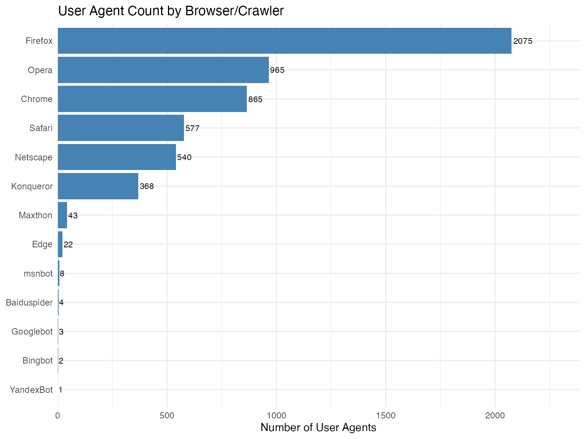
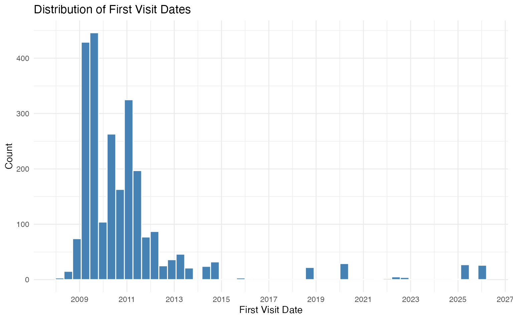
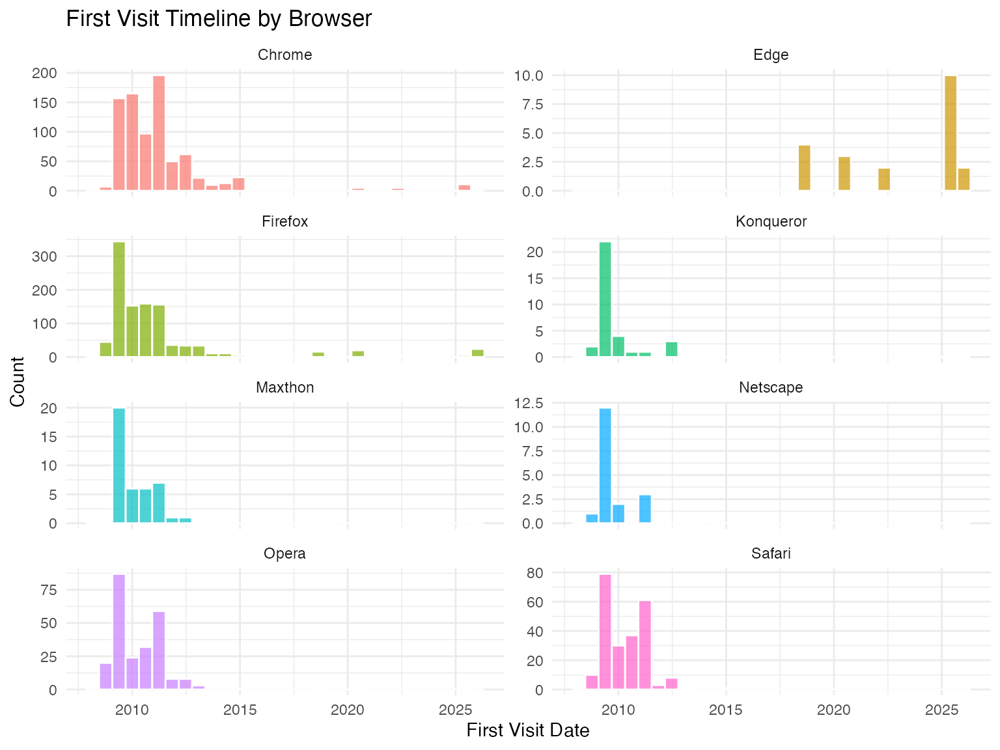
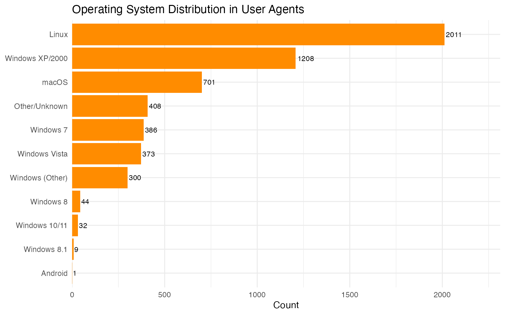
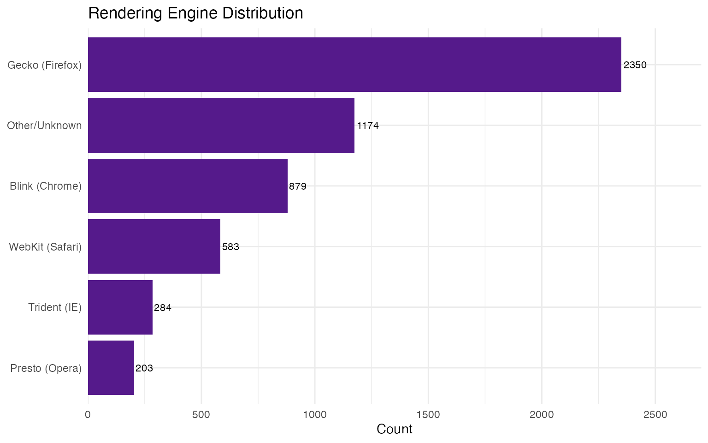
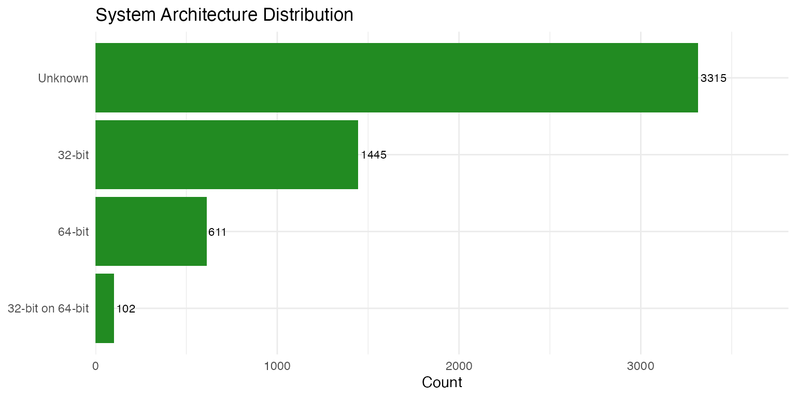
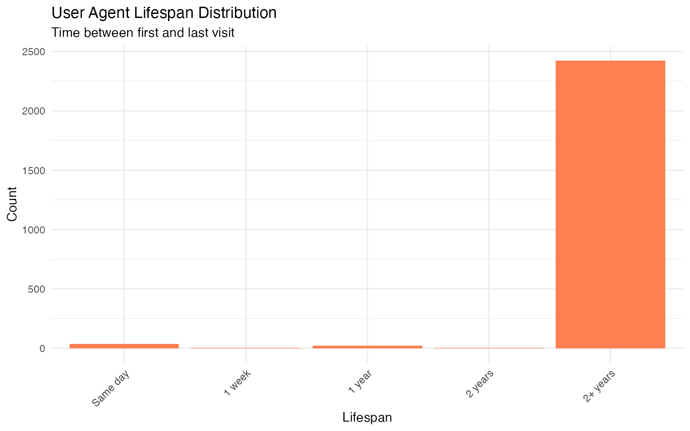
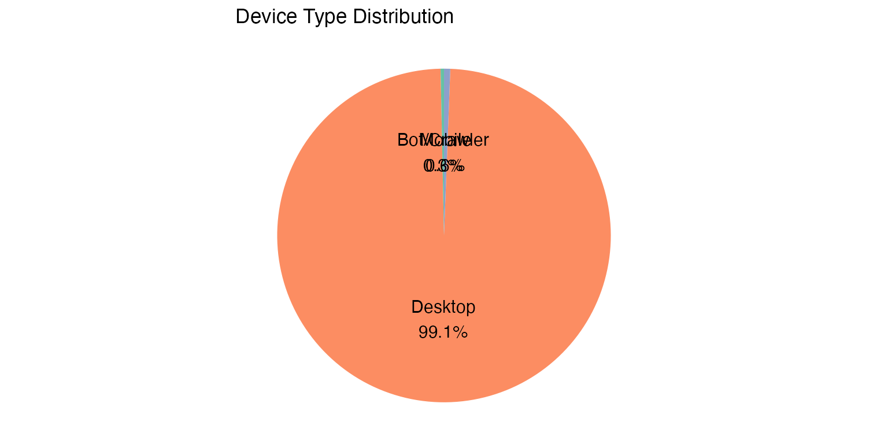
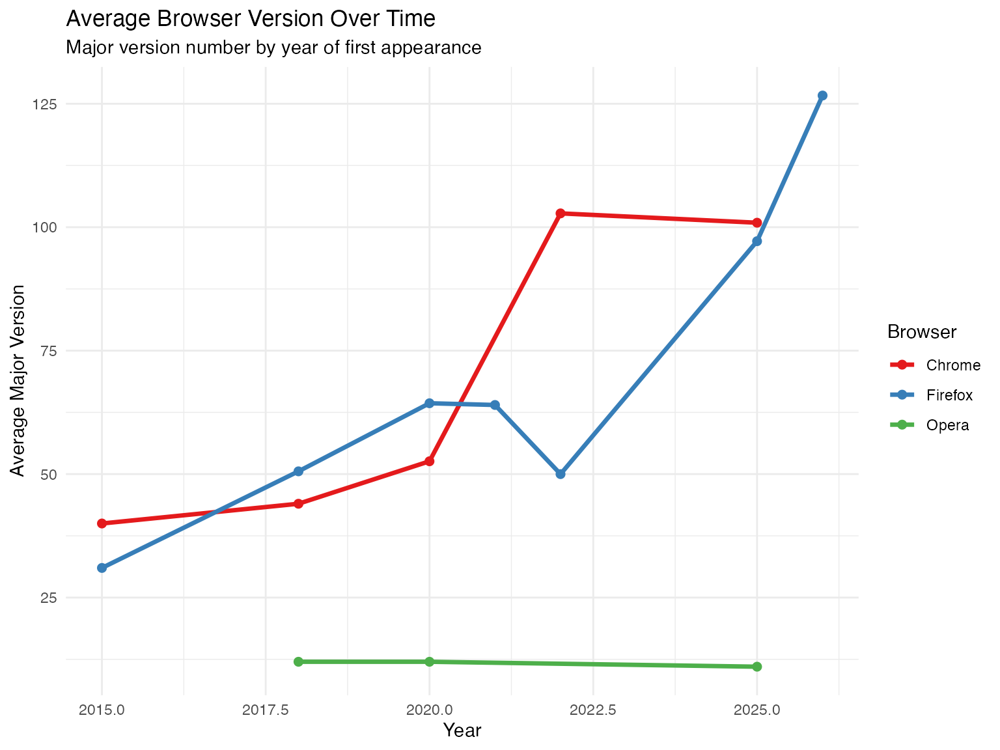

library(dplyr)
library(ggplot2)
library(forcats)
library(lubridate)
library(scales)
library(tidyr)
library(stringr)Loading the Data
We have scraped user agent data from useragentstring.com for various browsers and crawlers. Let’s load and combine all the datasets.
# Load all RDS files from data folder
data_files <- list.files(
system.file("extdata", package = "useragentstring"),
pattern = "\\.rds$",
full.names = TRUE
)
# If running locally during development
if (length(data_files) == 0) {
data_files <- list.files("../data", pattern = "\\.rds$", full.names = TRUE)
}
# Also load the CSV if available
csv_file <- "../user_agents.csv"
if (file.exists(csv_file)) {
csv_data <- read.csv(csv_file)
csv_data$first_visit <- as.POSIXct(csv_data$first_visit)
csv_data$last_visit <- as.POSIXct(csv_data$last_visit)
} else {
csv_data <- NULL
}
# Combine all RDS data (ensure consistent date types)
if (length(data_files) > 0) {
rds_list <- lapply(data_files, function(f) {
d <- readRDS(f)
# Ensure dates are POSIXct
if (!is.null(d$first_visit) && !inherits(d$first_visit, "POSIXct")) {
d$first_visit <- as.POSIXct(d$first_visit)
}
if (!is.null(d$last_visit) && !inherits(d$last_visit, "POSIXct")) {
d$last_visit <- as.POSIXct(d$last_visit)
}
d
})
rds_data <- bind_rows(rds_list)
} else {
rds_data <- NULL
}
# Combine everything
all_data <- bind_rows(csv_data, rds_data) |>
distinct(useragent_string, .keep_all = TRUE)
cat("Total unique user agents:", nrow(all_data), "\n")
#> Total unique user agents: 5473Overview by Browser
browser_counts <- all_data |>
count(browser, sort = TRUE) |>
mutate(browser = fct_reorder(browser, n))
ggplot(browser_counts, aes(x = n, y = browser)) +
geom_col(fill = "steelblue") +
geom_text(aes(label = n), hjust = -0.1, size = 3) +
labs(
title = "User Agent Count by Browser/Crawler",
x = "Number of User Agents",
y = NULL
) +
theme_minimal() +
scale_x_continuous(expand = expansion(mult = c(0, 0.15)))
Timeline Analysis
First Visit Distribution
When were these user agents first seen on the web?
timeline_data <- all_data |>
filter(!is.na(first_visit)) |>
mutate(first_visit_year = year(first_visit))
ggplot(timeline_data, aes(x = first_visit)) +
geom_histogram(bins = 50, fill = "steelblue", color = "white") +
labs(
title = "Distribution of First Visit Dates",
x = "First Visit Date",
y = "Count"
) +
theme_minimal() +
scale_x_datetime(date_labels = "%Y", date_breaks = "2 years")
First Visit by Browser
top_browsers <- browser_counts |>
slice_max(n, n = 8) |>
pull(browser)
timeline_by_browser <- all_data |>
filter(!is.na(first_visit), browser %in% top_browsers) |>
mutate(first_visit_year = year(first_visit))
ggplot(timeline_by_browser, aes(x = first_visit, fill = browser)) +
geom_histogram(bins = 30, color = "white", alpha = 0.7) +
facet_wrap(~browser, scales = "free_y", ncol = 2) +
labs(
title = "First Visit Timeline by Browser",
x = "First Visit Date",
y = "Count"
) +
theme_minimal() +
theme(legend.position = "none") +
scale_x_datetime(date_labels = "%Y")
Activity Analysis
Most Recently Seen User Agents
recent_ua <- all_data |>
filter(!is.na(last_visit)) |>
arrange(desc(last_visit)) |>
select(browser, version, last_visit, useragent_string) |>
head(10)
knitr::kable(recent_ua, caption = "10 Most Recently Seen User Agents")| browser | version | last_visit | useragent_string |
|---|---|---|---|
| Chrome | 14.0.815.0 | 2026-01-14 12:58:00 | Mozilla/5.0 (Windows NT 5.1) AppleWebKit/535.1 (KHTML, like Gecko) Chrome/14.0.815.0 Safari/535.1 |
| Firefox | 2.0.0.17 | 2026-01-14 12:08:00 | Mozilla/5.0 (Windows; U; Windows NT 5.1; sv-SE; rv:1.8.1.17) Gecko/20080829 Firefox/2.0.0.17 |
| Baiduspider | 2.0 | 2026-01-14 10:06:00 | Mozilla/5.0 (compatible; Baiduspider/2.0; +http://www.baidu.com/search/spider.html) |
| Firefox | 40.1 | 2026-01-14 08:46:00 | Mozilla/5.0 (Windows NT 6.1; WOW64; rv:40.0) Gecko/20100101 Firefox/40.1 |
| Googlebot | 2.1 | 2026-01-14 08:22:00 | Mozilla/5.0 (compatible; Googlebot/2.1; +http://www.google.com/bot.html) |
| Chrome | 17.0.963.66 | 2026-01-14 07:29:00 | Mozilla/5.0 (Windows NT 6.0) AppleWebKit/535.11 (KHTML, like Gecko) Chrome/17.0.963.66 Safari/535.11 |
| Firefox | 146.0 | 2026-01-14 06:48:00 | Mozilla/5.0 (Windows NT 10.0; Win64; x64; rv:146.0) Gecko/20100101 Firefox/146.0 |
| Baiduspider | NA | 2026-01-14 04:44:00 | Baiduspider+(+http://www.baidu.com/search/spider.htm) |
| YandexBot | 3.0 | 2026-01-14 03:27:00 | Mozilla/5.0 (compatible; YandexBot/3.0; +http://yandex.com/bots) |
| Firefox | 136.0 | 2026-01-13 12:36:00 | Mozilla/5.0 (X11; Ubuntu; Linux x86_64; rv:136.0) Gecko/20100101 Firefox/136.0 |
Oldest User Agents Still Active
oldest_active <- all_data |>
filter(!is.na(first_visit), !is.na(last_visit)) |>
mutate(age_days = as.numeric(difftime(last_visit, first_visit, units = "days"))) |>
filter(age_days > 0) |>
arrange(first_visit) |>
select(browser, version, first_visit, last_visit, age_days) |>
head(10)
knitr::kable(oldest_active, caption = "10 Oldest User Agents (by First Visit)")| browser | version | first_visit | last_visit | age_days |
|---|---|---|---|---|
| Firefox | 1.5.0.2 | 2008-02-27 10:16:00 | 2023-10-24 03:58:00 | 5717.696 |
| Firefox | 2.0.0.6 | 2008-03-03 09:39:00 | 2024-05-04 06:44:00 | 5905.837 |
| Firefox | 2.0.0.6 | 2008-03-13 10:40:00 | 2023-04-17 07:08:00 | 5512.853 |
| msnbot | 2.1 | 2008-05-27 11:42:00 | 2022-03-06 06:15:00 | 5030.815 |
| Firefox | 2.0.0.12 | 2008-06-01 03:28:00 | 2025-11-02 07:25:00 | 6363.206 |
| Firefox | 3.0.9 | 2008-06-01 07:37:00 | 2025-12-13 02:11:00 | 6403.815 |
| Opera | 9.52 | 2008-08-06 01:20:00 | 2024-07-12 09:34:00 | 5819.343 |
| Safari | 3.1.2 | 2008-08-27 06:34:00 | 2023-04-28 10:54:00 | 5357.181 |
| Opera | 9.51 | 2008-09-02 01:43:00 | 2023-12-17 11:57:00 | 5584.468 |
| Firefox | 3.0.1 | 2008-09-10 04:44:00 | 2023-05-17 06:56:00 | 5362.092 |
User Agent String Patterns
Operating System Distribution
os_patterns <- all_data |>
mutate(
os = case_when(
str_detect(useragent_string, "Windows NT 10") ~ "Windows 10/11",
str_detect(useragent_string, "Windows NT 6\\.3") ~ "Windows 8.1",
str_detect(useragent_string, "Windows NT 6\\.2") ~ "Windows 8",
str_detect(useragent_string, "Windows NT 6\\.1") ~ "Windows 7",
str_detect(useragent_string, "Windows NT 6\\.0") ~ "Windows Vista",
str_detect(useragent_string, "Windows NT 5") ~ "Windows XP/2000",
str_detect(useragent_string, "Windows") ~ "Windows (Other)",
str_detect(useragent_string, "Mac OS X") ~ "macOS",
str_detect(useragent_string, "Linux") ~ "Linux",
str_detect(useragent_string, "Android") ~ "Android",
str_detect(useragent_string, "iPhone|iPad") ~ "iOS",
TRUE ~ "Other/Unknown"
)
) |>
count(os, sort = TRUE) |>
mutate(os = fct_reorder(os, n))
ggplot(os_patterns, aes(x = n, y = os)) +
geom_col(fill = "darkorange") +
geom_text(aes(label = n), hjust = -0.1, size = 3) +
labs(
title = "Operating System Distribution in User Agents",
x = "Count",
y = NULL
) +
theme_minimal() +
scale_x_continuous(expand = expansion(mult = c(0, 0.15)))
Summary Statistics
summary_stats <- all_data |>
summarise(
total_user_agents = n(),
browsers_crawlers = n_distinct(browser),
earliest_first_visit = min(first_visit, na.rm = TRUE),
latest_last_visit = max(last_visit, na.rm = TRUE),
pct_with_dates = mean(!is.na(first_visit) | !is.na(last_visit)) * 100
)
knitr::kable(summary_stats, caption = "Summary Statistics")| total_user_agents | browsers_crawlers | earliest_first_visit | latest_last_visit | pct_with_dates |
|---|---|---|---|---|
| 5473 | 13 | 2008-02-27 10:16:00 | 2026-01-14 12:58:00 | 99.79901 |
Rendering Engine Distribution
User agents typically identify their rendering engine. Let’s analyze the distribution.
engine_data <- all_data |>
mutate(
engine = case_when(
str_detect(useragent_string, "Gecko/") ~ "Gecko (Firefox)",
str_detect(useragent_string, "AppleWebKit.*Chrome") ~ "Blink (Chrome)",
str_detect(useragent_string, "AppleWebKit") ~ "WebKit (Safari)",
str_detect(useragent_string, "Trident|MSIE") ~ "Trident (IE)",
str_detect(useragent_string, "Presto") ~ "Presto (Opera)",
str_detect(useragent_string, "EdgeHTML") ~ "EdgeHTML",
TRUE ~ "Other/Unknown"
)
) |>
count(engine, sort = TRUE) |>
mutate(engine = fct_reorder(engine, n))
ggplot(engine_data, aes(x = n, y = engine)) +
geom_col(fill = "purple4") +
geom_text(aes(label = n), hjust = -0.1, size = 3) +
labs(
title = "Rendering Engine Distribution",
x = "Count",
y = NULL
) +
theme_minimal() +
scale_x_continuous(expand = expansion(mult = c(0, 0.15)))
Architecture Analysis (32-bit vs 64-bit)
arch_data <- all_data |>
mutate(
architecture = case_when(
str_detect(useragent_string, "Win64|x64|x86_64|amd64") ~ "64-bit",
str_detect(useragent_string, "WOW64") ~ "32-bit on 64-bit",
str_detect(useragent_string, "i686|i386|x86") ~ "32-bit",
TRUE ~ "Unknown"
)
) |>
count(architecture, sort = TRUE) |>
mutate(architecture = fct_reorder(architecture, n))
ggplot(arch_data, aes(x = n, y = architecture)) +
geom_col(fill = "forestgreen") +
geom_text(aes(label = n), hjust = -0.1, size = 3) +
labs(
title = "System Architecture Distribution",
x = "Count",
y = NULL
) +
theme_minimal() +
scale_x_continuous(expand = expansion(mult = c(0, 0.15)))
User Agent Lifespan Analysis
How long do user agents remain active (time between first and last visit)?
lifespan_data <- all_data |>
filter(!is.na(first_visit), !is.na(last_visit)) |>
mutate(
lifespan_days = as.numeric(difftime(last_visit, first_visit, units = "days")),
lifespan_category = case_when(
lifespan_days <= 0 ~ "Same day",
lifespan_days <= 7 ~ "1 week",
lifespan_days <= 30 ~ "1 month",
lifespan_days <= 90 ~ "3 months",
lifespan_days <= 365 ~ "1 year",
lifespan_days <= 730 ~ "2 years",
TRUE ~ "2+ years"
)
) |>
mutate(lifespan_category = factor(lifespan_category,
levels = c("Same day", "1 week", "1 month", "3 months", "1 year", "2 years", "2+ years")))
ggplot(lifespan_data, aes(x = lifespan_category)) +
geom_bar(fill = "coral") +
labs(
title = "User Agent Lifespan Distribution",
subtitle = "Time between first and last visit",
x = "Lifespan",
y = "Count"
) +
theme_minimal() +
theme(axis.text.x = element_text(angle = 45, hjust = 1))
Mobile vs Desktop
device_data <- all_data |>
mutate(
device_type = case_when(
str_detect(useragent_string, "Mobile|Android|iPhone|iPad|iPod|webOS|BlackBerry|Opera Mini|Opera Mobi") ~ "Mobile",
str_detect(useragent_string, regex("bot|crawler|spider|slurp", ignore_case = TRUE)) ~ "Bot/Crawler",
TRUE ~ "Desktop"
)
) |>
count(device_type, sort = TRUE) |>
mutate(
pct = n / sum(n) * 100,
label = paste0(device_type, "\n", round(pct, 1), "%")
)
ggplot(device_data, aes(x = "", y = n, fill = device_type)) +
geom_col(width = 1) +
coord_polar("y") +
geom_text(aes(label = label), position = position_stack(vjust = 0.5), size = 4) +
labs(title = "Device Type Distribution") +
theme_void() +
theme(legend.position = "none") +
scale_fill_brewer(palette = "Set2")
Version Trends for Top Browsers
# Get major version for top browsers
version_trends <- all_data |>
filter(browser %in% c("Chrome", "Firefox", "Safari", "Opera")) |>
filter(!is.na(first_visit)) |>
mutate(
major_version = as.numeric(str_extract(version, "^\\d+")),
year = year(first_visit)
) |>
filter(!is.na(major_version), year >= 2015) |>
group_by(browser, year) |>
summarise(
avg_version = mean(major_version, na.rm = TRUE),
.groups = "drop"
)
ggplot(version_trends, aes(x = year, y = avg_version, color = browser)) +
geom_line(linewidth = 1.2) +
geom_point(size = 2) +
labs(
title = "Average Browser Version Over Time",
subtitle = "Major version number by year of first appearance",
x = "Year",
y = "Average Major Version",
color = "Browser"
) +
theme_minimal() +
scale_color_brewer(palette = "Set1")
Data Freshness
freshness <- all_data |>
summarise(
last_scrape = max(last_visit, na.rm = TRUE),
newest_ua_first_seen = max(first_visit, na.rm = TRUE),
total_records = n()
)
cat("Data last updated:", format(Sys.Date(), "%Y-%m-%d"), "\n")
#> Data last updated: 2026-01-14
cat("Most recent last_visit in data:", format(freshness$last_scrape, "%Y-%m-%d %H:%M"), "\n")
#> Most recent last_visit in data: 2026-01-14 12:58
cat("Newest user agent first seen:", format(freshness$newest_ua_first_seen, "%Y-%m-%d %H:%M"), "\n")
#> Newest user agent first seen: 2026-01-10 12:41
cat("Total records:", freshness$total_records, "\n")
#> Total records: 5473Data Export
The full dataset can be exported for further analysis:
# Save combined data
write.csv(all_data, "useragent_data.csv", row.names = FALSE)